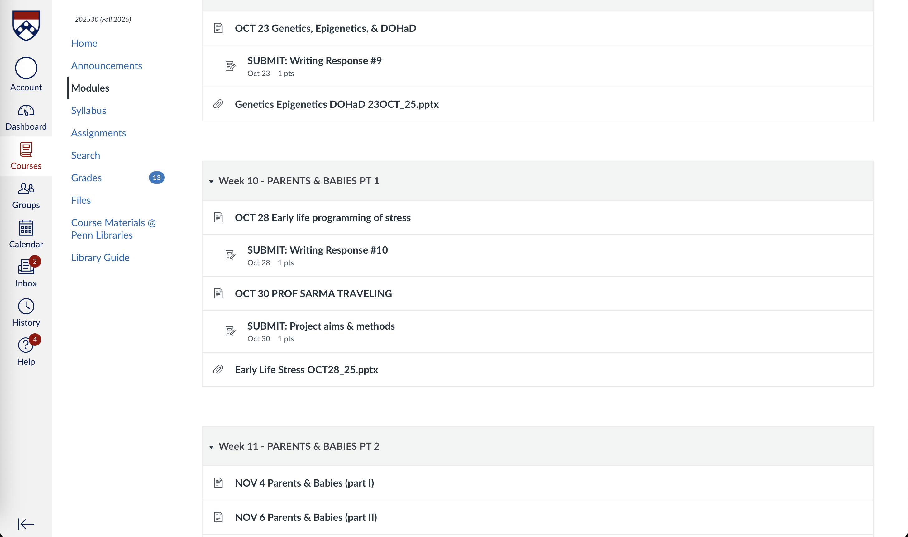
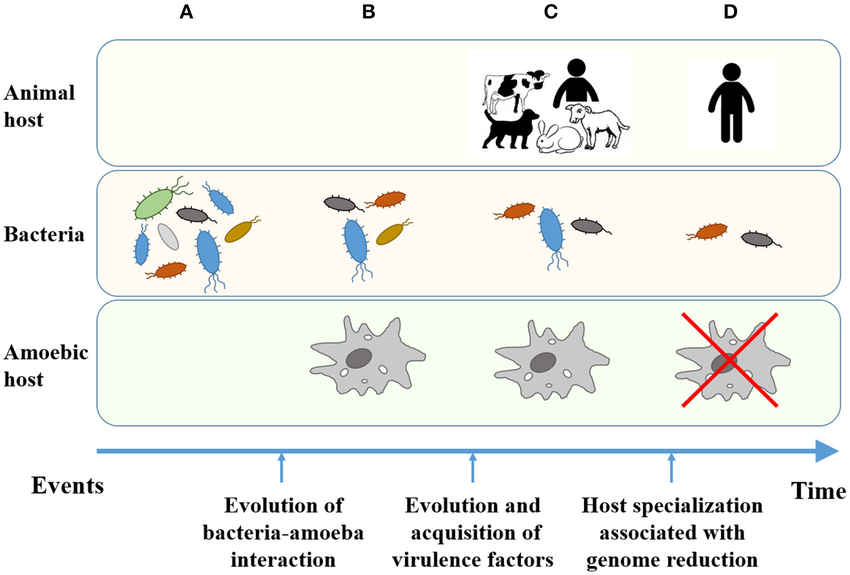

Drowning in Dense Class Notes
I’m taking Human Disease and Evolution this semester, and it’s incredibly note-intensive. Every lecture covers evolutionary biology, epidemiology, pathogen adaptation, and historical case studies—all dense material that builds on previous content. By midterms, I had hundreds of pages of notes with no clear way to study them efficiently.
I decided to test whether Claude could help synthesize these notes and work as a study partner. Not just summarizing, but actually helping me understand connections and prepare for exams.

Dense notes from Human Disease and Evolution lectures
How I’m Using Claude
Initial Upload and Organization
I created a Claude project specifically for the course and uploaded: - Lecture notes from the first 8 weeks - Reading summaries - Professor’s study guide questions - Previous exam questions (from the syllabus)
Then I asked:
“I’ve uploaded notes from my Human Disease and Evolution course. Help me organize the main themes across lectures and identify connections between topics.”
Claude produced a thematic breakdown: - Evolutionary pressures on pathogens - Host-pathogen coevolution - Historical transitions (hunter-gatherer → agricultural → urban) and disease emergence - Trade-offs in immune response - Case studies (malaria, tuberculosis, influenza)
This was immediately useful. My notes were chronologically organized by lecture, but the exam tests conceptual understanding across topics.
Synthesizing Across Lectures
My next prompt:
“We covered malaria in weeks 2, 4, and 7 from different angles. Synthesize all the malaria content into one coherent explanation covering: evolutionary biology, geographic distribution, historical impact, and current challenges.”
Claude pulled information from multiple lecture sets and created a unified overview. This saved me from manually cross-referencing my notes across different weeks.
Generating Practice Questions
For active recall practice:
“Based on the uploaded notes, generate 10 exam-style questions that test conceptual understanding, not just memorization. Include questions that require applying concepts to new scenarios.”
The questions were decent: - “How would you expect pathogen virulence to evolve in a population with high vs. low host density?” - “Explain why tuberculosis resurged in urban populations during industrialization using evolutionary principles.”
These forced me to think beyond memorizing facts.

Evolutionary dynamics between hosts and pathogens
What Actually Helped
Finding Connections I Missed
Claude identified patterns across lectures that I hadn’t noticed while taking notes in real-time. For example, the concept of “virulence-transmission trade-offs” appeared in multiple contexts (influenza, cholera, malaria), but I’d written it down separately each time without seeing the unifying principle.
Clarifying Confusing Concepts
When I asked:
“I don’t fully understand the relationship between R0 (basic reproduction number) and herd immunity threshold. Explain using the influenza example from my notes.”
Claude broke it down using the specific examples from my lectures, not generic textbook explanations. This was more helpful than Googling because it referenced the actual case studies we’d covered.
Creating Study Guides
Instead of re-reading hundreds of pages, I asked:
“Create a two-page study guide covering the five most important concepts from weeks 1-8, with specific examples from the notes.”
The condensed version helped me review quickly before office hours and identify gaps in my understanding.
Significant Limitations
Can’t Replace Actually Studying
The biggest misconception would be thinking Claude can study for you. It can’t.
When I tried asking Claude to quiz me on material, I noticed I could “cheat” by asking for hints or looking back at its previous responses. The lack of real accountability meant I wasn’t forcing myself to actually retrieve information from memory.
According to research on active learning, the cognitive struggle of retrieval is what builds long-term retention. AI tools that make information too easy to access can undermine this.
Factual Accuracy Issues
Claude occasionally made small errors when synthesizing across notes: - Mixing up dates for historical disease outbreaks - Slightly mischaracterizing which regions certain diseases are endemic to - Conflating similar but distinct evolutionary concepts
These weren’t obvious hallucinations—they were plausible-sounding errors that I only caught because I’d attended the lectures. If I’d been using Claude to learn new material rather than organize existing notes, I might not have noticed.
Can’t Capture Lecture Nuance
My professor emphasizes certain concepts or says “this will be on the exam.” Those verbal cues don’t make it into my typed notes, so Claude can’t prioritize what’s actually important vs. what’s just background information.
It treats all information in my notes equally, when some concepts are more central than others.
Dependence Risk
There’s a real risk of becoming dependent on AI for synthesis and losing the ability to do it myself. The mental work of organizing information and finding connections is part of learning—offloading that entirely to AI might make me better at using AI but worse at actual thinking.
Research on cognitive offloading to technology suggests that over-reliance on external tools can reduce our own cognitive abilities over time.
Is Claude Actually a Good Study Partner?
What Makes a Good Study Partner
Real study partners: - Challenge your understanding by asking probing questions - Notice when you’re bullshitting and call you out - Have their own understanding that you can compare against - Hold you accountable for actually studying
Claude does some of this (asking questions, providing alternative explanations) but fails at others (accountability, challenging weak understanding).
Where It Actually Works
Claude is better described as a “note organization assistant” than a “study partner.” It’s useful for: - Synthesizing large amounts of text quickly - Finding patterns across multiple documents - Generating initial practice questions - Creating structured study guides
These are valuable, but they’re the preliminary work before actual studying begins.
The Accountability Gap
The biggest difference between Claude and a human study partner: I can’t fool Claude, but I also can’t fool myself into thinking Claude-assisted studying counts as real studying.
When I study with friends, the social pressure and explanation requirement force actual learning. With Claude, I can go through the motions of “studying” while not really engaging deeply with the material.
How I’m Actually Using It
Early-Stage Organization Only
I use Claude at the beginning of my study process: 1. Upload notes after several lectures 2. Get thematic organization and connections 3. Create initial study guide 4. Generate practice questions
Then I study using traditional methods: spaced repetition flashcards, practice problems without AI help, and study groups with actual humans.
Verification Against Lecture Materials
Anything Claude synthesizes, I verify against: - Original lecture slides - Textbook readings - Professor’s posted materials
I don’t trust Claude’s synthesis as the final word—it’s a starting point that I refine.
Using It for Weak Areas
When I identify concepts I don’t understand well, I ask Claude for additional explanations or examples. But then I test my understanding by explaining it to a friend without AI help.
Real Study Sessions Stay Human
My actual exam prep involves: - Study groups with classmates - Office hours with TA and professor - Practice exams under time pressure - Teaching concepts to others
Claude handles the logistical grunt work of organizing notes, but learning happens through human interaction and cognitive struggle.
Final Assessment
Using Claude to synthesize dense class notes is genuinely useful for note-intensive courses. It saves time on organization and helps identify connections across material.
But calling it a “study partner” overstates what it can do. It’s more like a smart organizational tool that can handle the tedious work of cross-referencing and initial synthesis.
The real learning—deep understanding, retention, application—still requires traditional study methods and human interaction. Claude can make the prep work more efficient, but it can’t replace the cognitive work of actually studying.
For Human Disease and Evolution specifically, Claude helped me organize a semester’s worth of dense notes into a manageable study plan. But I’m not bringing Claude into the exam room—I need to make sure the knowledge is in my head, not just in my AI assistant’s context window.
The tool is helpful. But over-relying on it would be a mistake that probably shows up when exam day arrives.